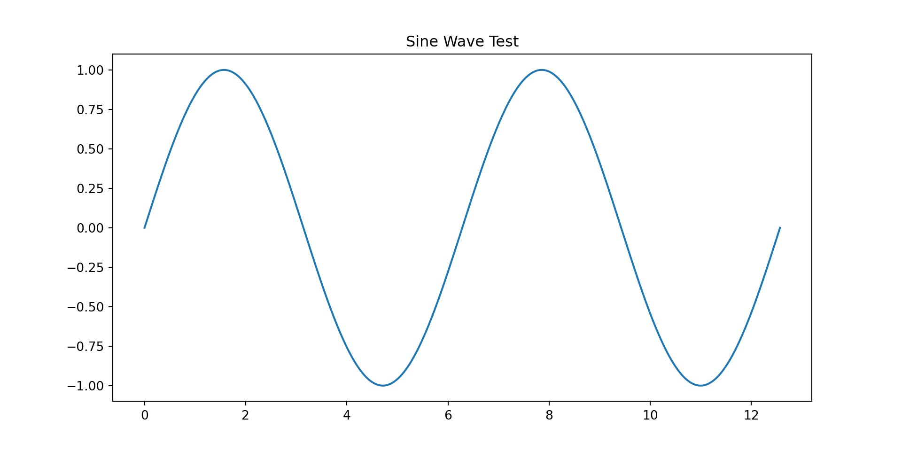

Introduction and Probability Review
January 12, 2026
The Gallup Poll tracks the approval ratings of US presidents according to a careful polling methodology
Each day they telephone \(n=1500\) adults and their sampling error for the approval ratings is about \(4\%\)
Let \(Y \sim \Bern(\mu)\), a Bernoulli (free throw shooting) distribution wth probability of success \(\mu\), \[ \Prob(Y =y) = \begin{cases} \mu, & y=1, \text{ (yes, approve)}\\ 1-\mu, & y = 0, \text{ (no, do not approve)} \end{cases} \] If \(Y_1, \ldots, Y_n \IIDsim \Bern(\mu)\), then \[\begin{align*} T &:= Y_1 + \cdots + Y_n \sim \Bin(n,\mu), \quad \Prob(T = y) = \binom{n}{y} \mu^y (1-\mu)^{n-y}\\ \barY &:= \frac 1n (Y_1 + \cdots + Y_n) \appxsim \Norm\bigl(\mu,\mu(1-\mu)/n\bigr) \quad \text{by the }\class{alert}{\text{Central Limit Theorem}} \end{align*}\]
If \(Y_1, \ldots, Y_n \IIDsim \Bern(\mu)\), then we can construct a confidence interval that captures the true approval rating with high probability:
\[\begin{align*} T &:= Y_1 + \cdots + Y_n \sim \Bin(n,\mu), \quad \Prob(T = y) = \binom{n}{y} \mu^y (1-\mu)^{n-y}\\ \barY &:= \frac 1n (Y_1 + \cdots + Y_n) \appxsim \Norm\bigl(\mu,\mu(1-\mu)/n\bigr) \quad \text{by the }\class{alert}{\text{Central Limit Theorem}} \\ 95\% & \approx \Prob\Bigl[\mu - 1.96\sqrt{\mu(1-\mu)/n} \le \class{alert}{\barY} \le \mu + 1.96\sqrt{\mu(1-\mu)/n}\Bigr] \end{align*}\]
\[\begin{align*} T &:= Y_1 + \cdots + Y_n \sim \Bin(n,\mu), \quad \Prob(T = y) = \binom{n}{y} \mu^y (1-\mu)^{n-y}\\ \barY &:= \frac 1n (Y_1 + \cdots + Y_n) \appxsim \Norm\bigl(\mu,\mu(1-\mu)/n\bigr) \quad \text{by the }\class{alert}{\text{Central Limit Theorem}} \\ 95\% & \approx \Prob\Bigl[\mu - 1.96\sqrt{\mu(1-\mu)/n} \le \class{alert}{\barY} \le \mu + 1.96\sqrt{\mu(1-\mu)/n}\Bigr] \\ & = \Prob\Bigl[\barY - 1.96\sqrt{\mu(1-\mu)/n} \le \class{alert}{\mu} \le \barY + 1.96\sqrt{\mu(1-\mu)/n}\Bigr] \\ & \approx \Prob\Bigl[\barY - 1.96\sqrt{\barY(1-\barY)/n} \le \class{alert}{\mu} \le \barY + 1.96\sqrt{\barY(1-\barY)/n}\Bigr] \\ & \le \Prob\Bigl[\barY - 1/\sqrt{n} \le \class{alert}{\mu} \le \barY + 1/\sqrt{n} \Bigr] \quad \text{since } \sqrt{\barY(1-\barY)} \le 1/2 \end{align*}\] For \(n = 1000\) we get \(1/\sqrt{n} \approx 3\%\). ⬇ Approval Rating Jupyter 📓
Welcome to MATH 476.
This course introduces probability and statistics with an emphasis on modeling and data and not running over the margins.
Key idea: probabilities are always between \(0\) and \(1\).
You need to know expectation, mean, etc. with a h2 header
\[\begin{gather*} \var(Y) = \operatorname{var}(Y) \\ \DeclareMathOperator{\var}{var} \var(Y) = \operatorname{var}(Y) \\ \Ex[Y] = \Ex[f(X)], Y \in \reals \\ \end{gather*}\]
an h3 header
and even more on this slide without the header
This slide verifies that Python runs inside your Quarto RevealJS slides.
\(\pi = 3.141592653589793\)
[1] 0.09040591[1] 0.9128159That’s it.
© Fred J. Hickernell